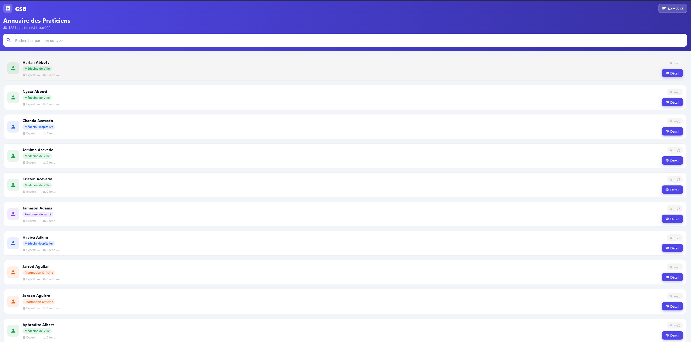
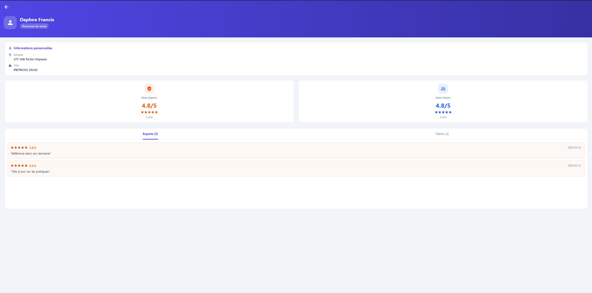
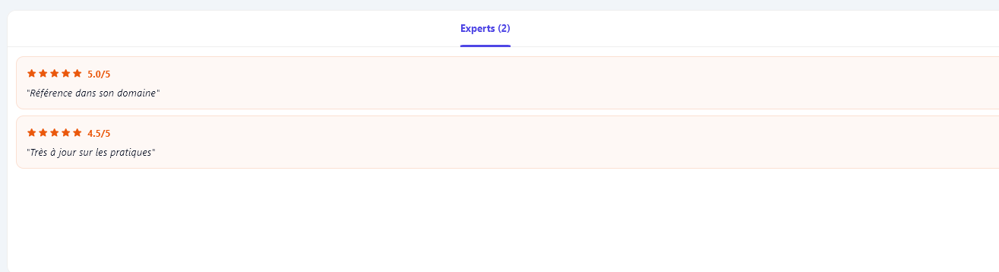
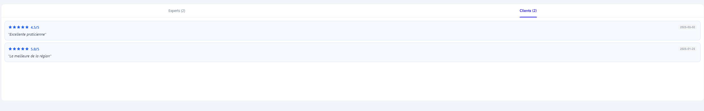
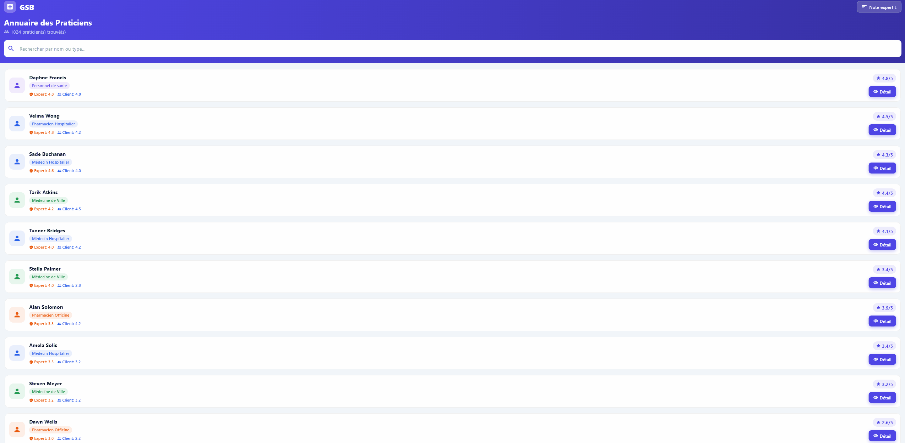

Notes des praticiens
Application mobile Flutter permettant de noter et commenter des praticiens. Avis clients et experts distincts, fiche détail par praticien, tri et classement dynamiques.
Captures d'écran




Démonstration

Ce que fait l'application
Liste des praticiens
Accueil avec liste paginée des praticiens, note globale visible en un coup d'œil et filtres de spécialité.
Fiche détail praticien
Profil complet — spécialité, coordonnées, moyenne des notes clients et experts, liste des avis.
Double système d'avis
Avis clients et avis experts séparés — pondération distincte dans le calcul de la note globale.
Tri & classement dynamique
Tri des praticiens par note, nombre d'avis, spécialité ou ordre alphabétique — mis à jour en temps réel.
API REST
Backend exposant les données praticiens et avis — l'application Flutter consomme l'API pour toutes les opérations.
Technologies utilisées
DartLangage
FlutterFramework mobile
MySQLBase de données
API RESTCommunication
Git / GitHubVersioning
Ce que j'ai appris
Découverte de Flutter & Dart
Premier projet mobile avec Flutter. La logique de widgets imbriqués et la gestion d'état
(setState, FutureBuilder) m'ont demandé une adaptation importante par rapport au développement web.
Consommation d'une API REST depuis mobile
Gérer les appels asynchrones à l'API, traiter les erreurs réseau et afficher des états
de chargement cohérents m'a appris les bonnes pratiques de la communication client-serveur en mobile.
Calcul de note pondérée
Implémenter un système de note différenciée experts / clients avec pondération ajustable
a nécessité une réflexion sur la modélisation des données et le calcul en base ou en application.